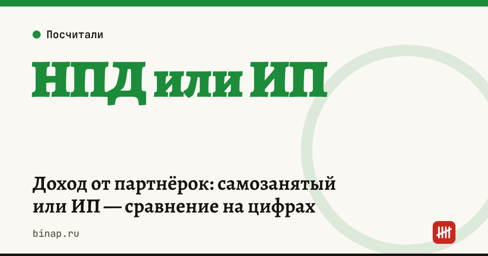

Доход от партнёрок: самозанятый или ИП — сравнение на цифрах

Вебмастеру с доходом от партнёрских сетей проще всего начать как самозанятому: 6% с доходов от компаний, без отчётности и обязательных взносов. ИП на УСН «доходы» при доходе больше примерно 1,1 млн ₽ в год платит столько же, но не ограничен лимитом 2,4 млн ₽ и может нанимать авторов. Перед выбором уточните, кому партнёрская сеть платит — самозанятым, ИП или только компаниям.
Коротко
- Партнёрские сети — компании, поэтому ставка самозанятого — 6%.
- Лимит самозанятого — 2,4 млн ₽ в год, нанимать сотрудников нельзя.
- ИП на УСН 6% платит взносы за себя (за 2026 год — 57 390 ₽ плюс 1% с дохода сверх 300 000 ₽) и уменьшает на них налог.
- При небольшом доходе самозанятость заметно дешевле; при доходе около 1,1–2,4 млн ₽ нагрузка почти одинакова.
- Реклама с партнёрскими ссылками маркируется в любом режиме.
Сроки, изменения и разборы для ИП и самозанятых — каждое утро в Telegram и MAX. Подпишитесь, чтобы не пропустить.
Сравнение на одинаковом доходе
Расчёт редакции.
| Доход в год | Самозанятый, 6% | ИП на УСН 6% с взносами |
|---|---|---|
| 300 000 ₽ | 18 000 ₽ | 57 390 ₽ |
| 1 200 000 ₽ | 72 000 ₽ | 72 000 ₽ |
| 2 000 000 ₽ | 120 000 ₽ | 120 000 ₽ |
| 3 000 000 ₽ | нельзя — больше лимита | 180 000 ₽ |
Как считали ИП при доходе 300 000 ₽: взносы — 57 390 ₽, налог 6% — 18 000 ₽, после уменьшения на взносы — 0. Всего — 57 390 ₽: при маленьком доходе фиксированные взносы делают ИП дороже.
Посчитайте свой доход на 1000 визитов и сколько трафика нужно для цели — в калькуляторе дохода с трафика.
Что ещё учесть
| Вопрос | Самозанятый | ИП |
|---|---|---|
| Кому платит сеть | уточните: не все сети работают с самозанятыми | работают почти все |
| Чеки | на каждую выплату в «Мой налог» | касса для расчётов с компаниями по безналу обычно не нужна |
| Авторы и помощники | только по договорам с другими самозанятыми | можно нанимать |
| Маркировка рекламы | обязательна | обязательна |
Что сделать
- Посчитайте доход от партнёрок за 12 месяцев.
- Узнайте в своих сетях, платят ли они самозанятым и есть ли ограничения по сумме выплат.
- Если доход приближается к 2,4 млн ₽ или нужны авторы в штате — регистрируйте ИП заранее.
- Проверьте маркировку каждой рекламной публикации — пошагово.
Как стать самозанятым — пошагово. Все шаги — в разделе «Вебмастерам».
Частые вопросы
Какая ставка у самозанятого вебмастера? С доходов от партнёрских сетей и других компаний — 6%, с доходов от физлиц — 4%.
Нужна ли касса ИП для выплат от партнёрских сетей? При безналичных расчётах с компаниями касса обычно не нужна. Если принимаете оплату от физлиц, например за рекламу, — проверьте требования.
Что будет, если превысить лимит 2,4 млн ₽? С дохода сверх лимита налог на профессиональный доход не применяется — нужно перейти на другой режим, поэтому ИП лучше зарегистрировать заранее.